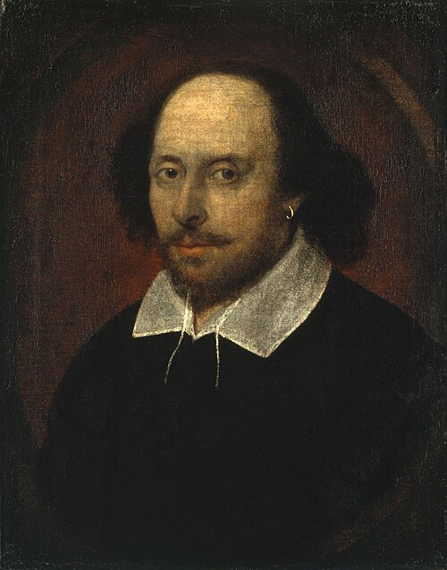

William Shakespeare
Ihminen muuttuu puhuessaan ja toimiessaan.
Shakespearen näyttämöllä yksityinen tunne törmää sukuun, valtioon ja kohtaloon. Runollinen kieli, huumori ja jännite elävät usein samassa kohtauksessa.
Etsi teokset kirjastostaElämä ja teokset
William Shakespeare syntyi Stratford-upon-Avonissa ja loi uransa Lontoon teattereissa näyttelijänä, näytelmäkirjailijana ja teatteriseurueen osakkaana. Hänen tuotantoonsa kuuluu komedioita, historiallisia näytelmiä, tragedioita ja runoutta.
Romeo ja Julia sekä Hamlet kuuluvat hänen tunnetuimpiin tragedioihinsa. Näytelmiä esitettiin kirjailijan elinaikana, mutta merkittävä kokoelma, First Folio, julkaistiin vasta vuonna 1623. Shakespeare oli kuollut seitsemän vuotta aiemmin.
Tyyli ja teemat
Puhe ei vain kerro tunteesta vaan voi synnyttää uuden päätöksen. Henkilöt kokeilevat ajatuksiaan ääneen, salaavat motiivejaan ja muuttavat asemaansa sanoilla. Juhlava runous vaihtuu tarpeen mukaan arkiseen sanailuun ja purevaan huumoriin.
Valinta · Rakkaus · Valta
Aloita tästä
Romeo ja Julia
Nuorten rakkaus kohtaa sukujen vihan ja kohtalokkaat väärinkäsitykset. Tragedia näyttää, kuinka yksityinen onni voi joutua yhteisen väkivallan vangiksi.
Hamlet
Tanskan prinssi saa tehtävän, jonka totuudesta ja oikeutuksesta hän ei voi olla varma. Näytelmä epäilystä, kostosta ja toimimisen vaikeudesta.
Kokeile lukea keskeinen puhe ääneen. Ajatus saattaa vaihtaa suuntaa juuri rytmin mukana.